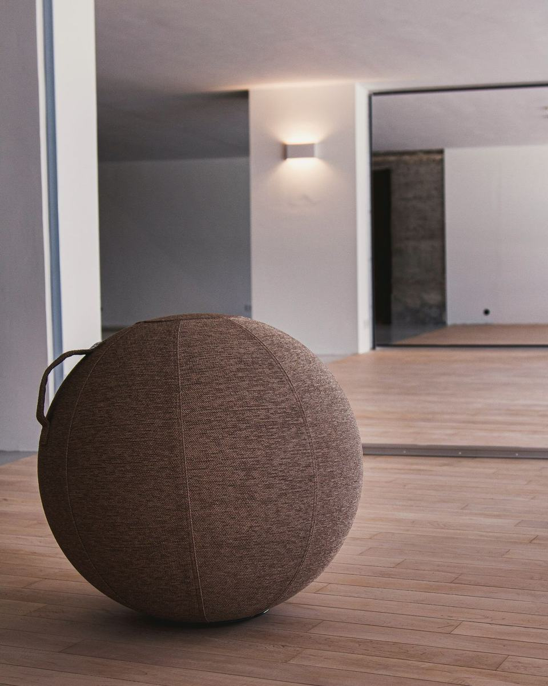
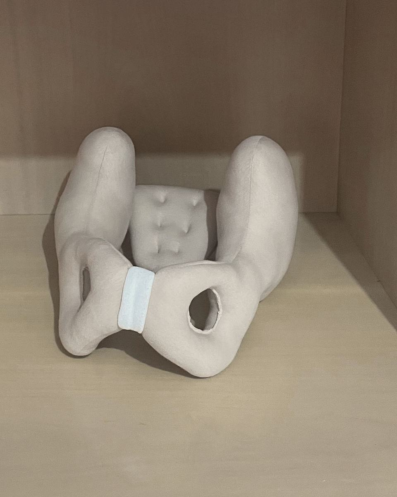
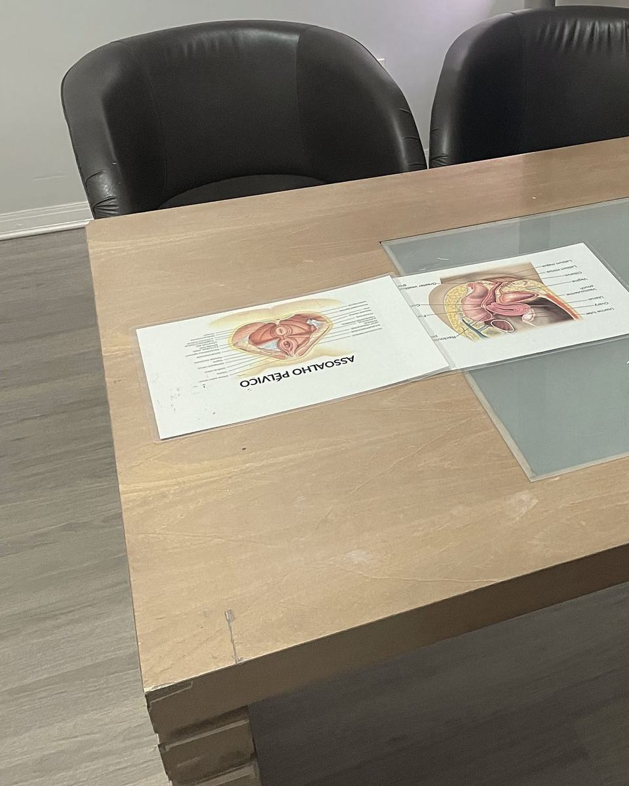
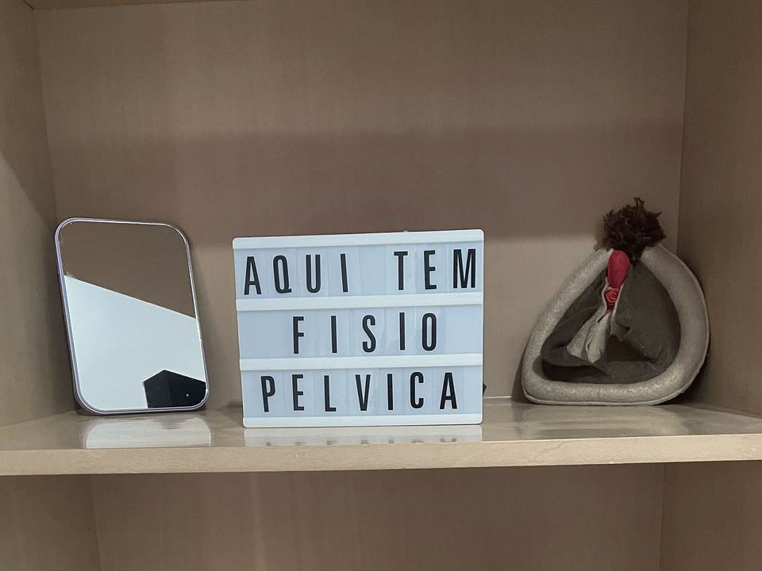

i.
Gestação
As dores comuns do terceiro trimestre e o fortalecimento dos músculos íntimos (assoalho pélvico), para uma rotina mais ativa durante a gravidez.
Falar da gestaçãoSeg–sex · 8h às 20h
AgendarTrindade · Florianópolis · Fisioterapia pélvica
Para a gestação, o preparo para o parto e o pós-parto, e para quem convive com perda de urina ou dor na relação. Atendimento no consultório da Trindade ou na sua casa, em Florianópolis.
Fisioterapeuta Liz Giller Parisi — CREFITO-10/262029-F
01 · Momentos
Orientações para a gestação, o trabalho de parto e o puerpério, cada uma no seu tempo. Escolha o momento em que você está.

i.
As dores comuns do terceiro trimestre e o fortalecimento dos músculos íntimos (assoalho pélvico), para uma rotina mais ativa durante a gravidez.
Falar da gestação
ii.
Consciência da respiração e da pelve para o trabalho de parto, e técnicas não farmacológicas para lidar com a dor. Também para quem está com medo do parto.
Falar do preparoiii.
A reabilitação pós-parto olha para os escapes de urina depois do parto e para a diástase abdominal, com exercícios respiratórios e hipopressivos.
Falar do pós-parto02 · Situações
Toque numa das situações abaixo. A mensagem já vai pronta para o WhatsApp, e você completa como quiser.
Escapes ao tossir ou no exercício, em qualquer quantidade. Também depois do parto e com a idade.
Aquela vontade súbita, sem tempo de chegar ao banheiro, ou idas a toda hora, de dia e à noite.
Dor ou pressão na região da bexiga que vai e volta.
Dor na penetração ou um travamento que você não controla. Pode ter causas físicas e emocionais.
Cólica forte todo mês ou dor no baixo ventre que já virou rotina.
O afastamento dos músculos da barriga que pode ficar depois da gestação.
Dor ao evacuar ou dificuldade para segurar gases e fezes.
Conte pelo WhatsApp o que você está sentindo, do seu jeito. A conversa começa daí.
03 · Como atua
A fisioterapia pélvica da Liz é personalizada. Os recursos abaixo entram conforme o que a avaliação mostra, com adaptações quando você precisar.
O ponto de partida das sessões. Se quiser, conte antes o que você sente e desde quando.
Na fisioterapia pélvica, a avaliação costuma olhar para os músculos do assoalho pélvico e para a respiração. É dela que saem os recursos das próximas linhas.
Respiração, força e mobilidade, com exercícios hipopressivos quando indicados.
Hipopressivos são exercícios de postura e respiração, sem impacto, usados por exemplo na diástase abdominal.
Massagem perineal e Epi-no, na preparação para o parto normal.
O Epi-no é um balão de silicone usado, com orientação, para preparar o períneo para o parto. A massagem perineal tem o mesmo objetivo.
Fitas elásticas aplicadas na pele, usadas nas dores da gestação e no pós-parto.
A fita acompanha o movimento do corpo e entra como apoio às outras etapas do cuidado.
Para dor pélvica e bexiga hiperativa: a modulação dos nervos pélvicos e a terapia manual.
A neuromodulação usa uma corrente elétrica leve sobre os nervos da pelve. Entra só quando a avaliação indica.
04 · Sobre
Liz Giller Parisi
Fisioterapeuta · CREFITO-10/262029-F
A Liz Giller é fisioterapeuta e atua com fisioterapia pélvica em Florianópolis. Atende mulheres da gravidez ao pós-parto e em outras fases da vida.
No Instagram, ela escreve para desmistificar temas como a incontinência urinária e o vaginismo. Primeiro vem o nome técnico, depois a tradução: o assoalho pélvico são os músculos íntimos. Na bio, ela chama o próprio trabalho de fisioterapia pélvica personalizada.
05 · Dúvidas
As dúvidas mais comuns de quem vai pela primeira vez. Se a sua não estiver aqui, mande uma mensagem para esclarecer as suas dúvidas antes de agendar.

Pode, e é comum na primeira vez. Conte por mensagem o que te preocupa na sessão, antes de agendar.
Pode. A fisioterapia pélvica auxilia tanto na gestação quanto no parto. O momento de começar é combinado com a Liz, junto com o que a sua médica orientar.
É comum, mas comum não quer dizer normal. Nesses casos, a fisioterapia pélvica trabalha os músculos que seguram a urina.
A Liz responde isso por mensagem. Vale perguntar antes de agendar.
Por mensagem ou ligação, no (48) 98421-9970. O atendimento é com hora marcada, de segunda a sexta, das 8h às 20h.
06 · Onde atendo
O consultório fica na R. José Batista Rosa, 359, na Trindade. Se for difícil sair de casa, na gestação ou com o bebê pequeno, a Liz também atende em domicílio em Florianópolis. Sempre com hora marcada.
Ver como chegar
Respirar com consciência faz parte do trabalho com o assoalho pélvico, da gestação ao dia a dia.
Como começar
Escolha o que fica mais fácil para você. Todos começam com uma mensagem.
Consultório
R. José Batista Rosa, 359
Seg–sex · 8h às 20h
Em casa
Florianópolis